| 세계관 소개 |
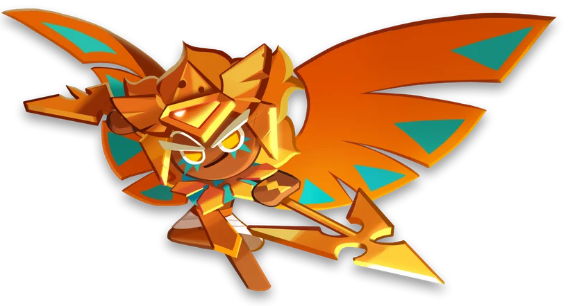 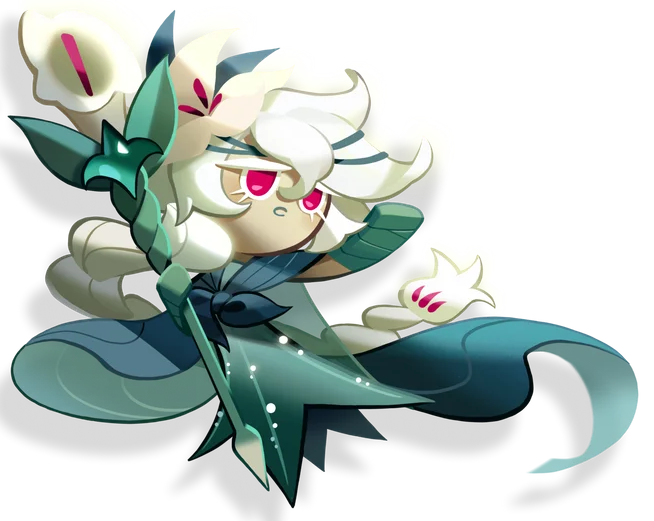 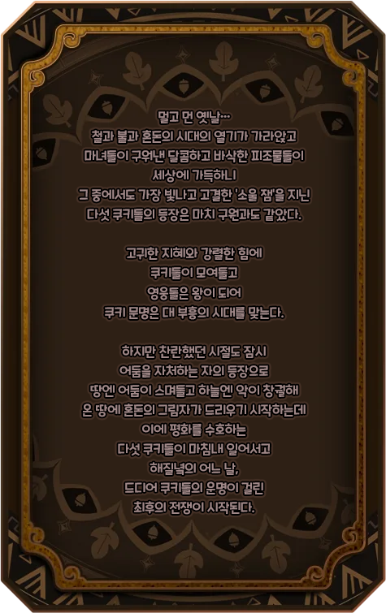 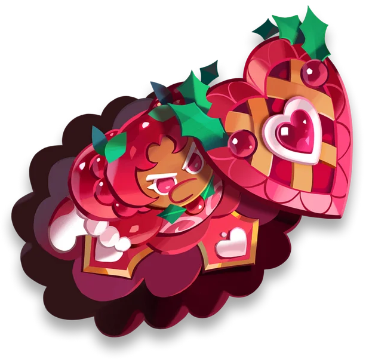 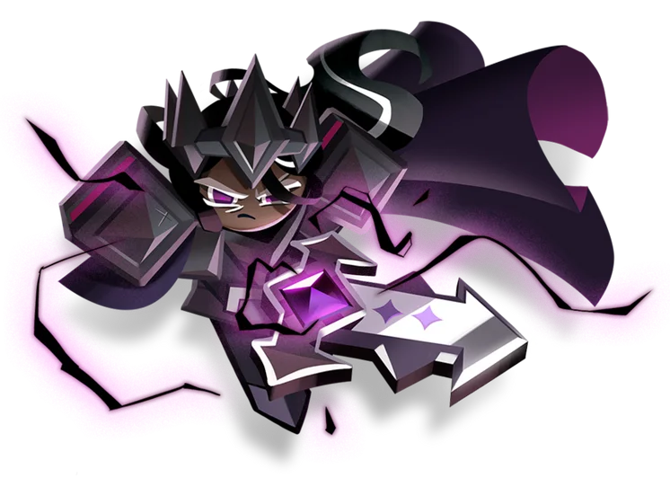 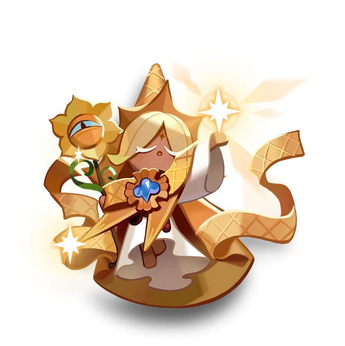
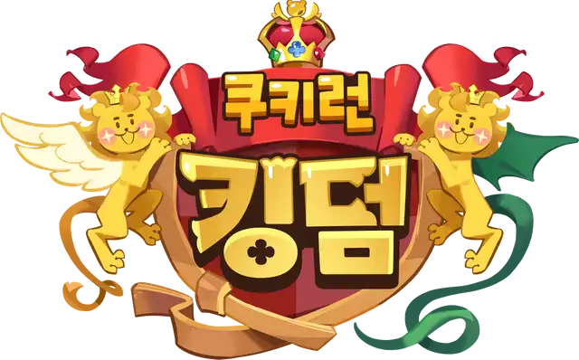
| 콘텐츠 소개 |
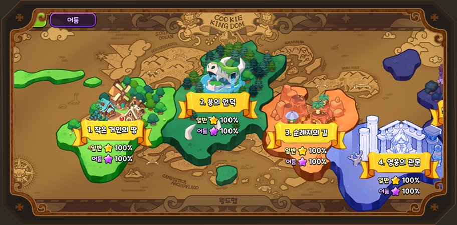
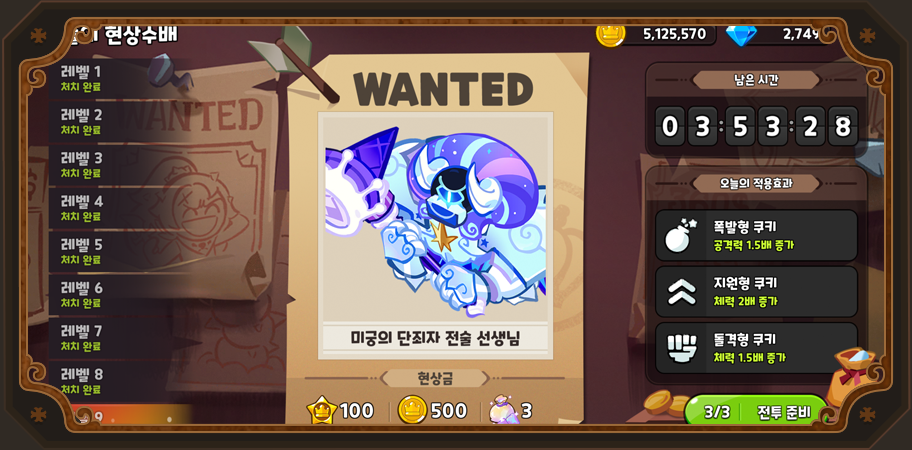
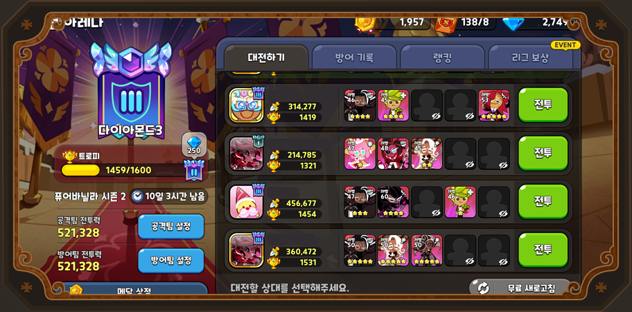
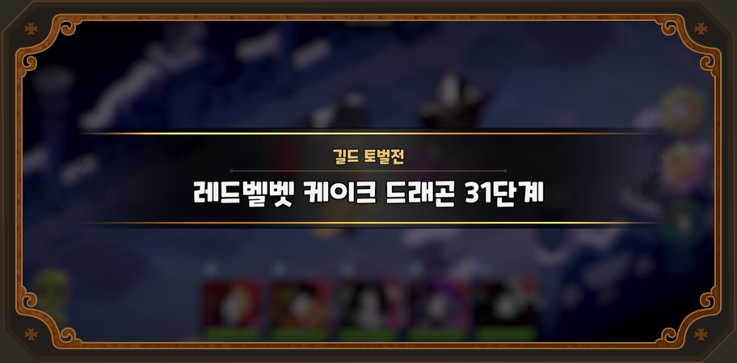
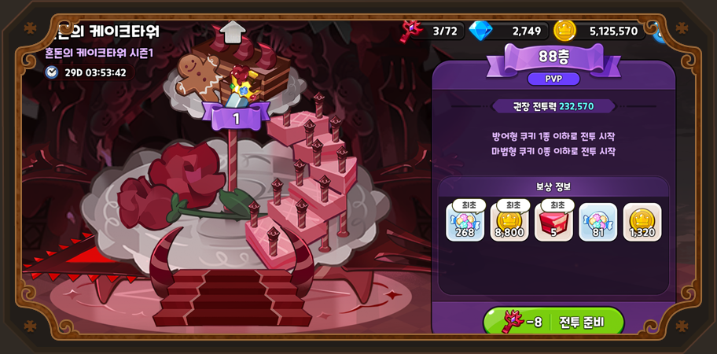
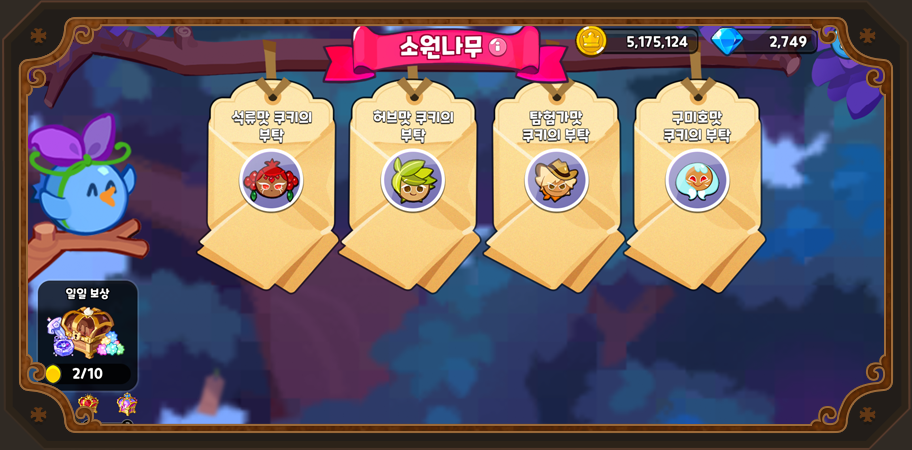
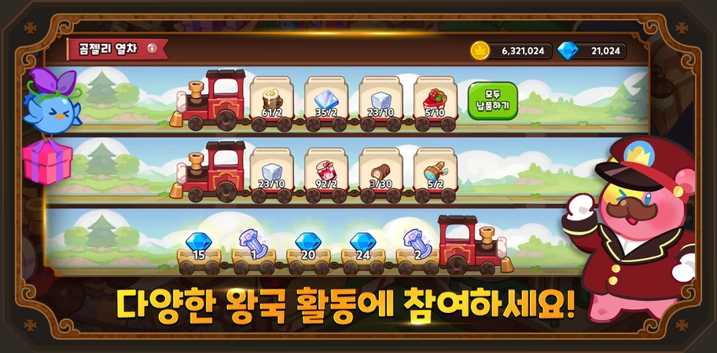
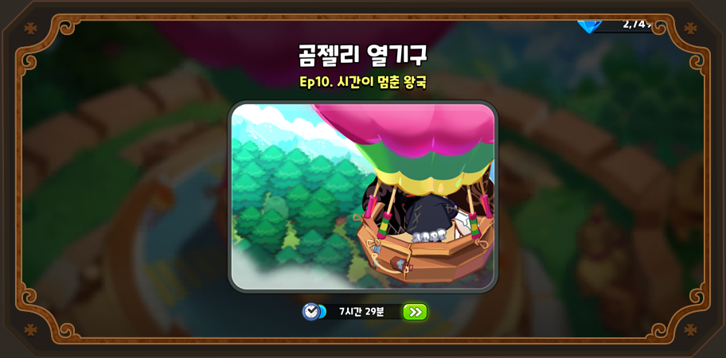
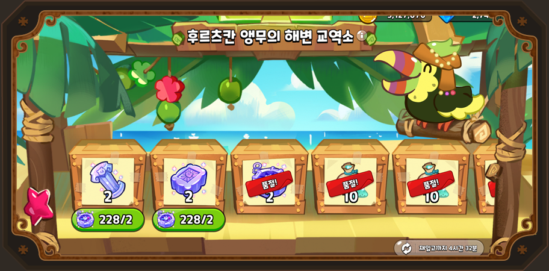
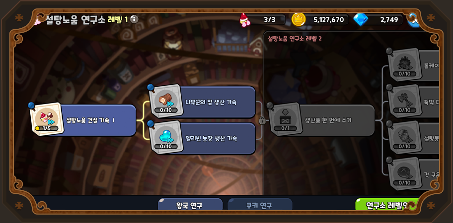
월드 탐험
쿠키런 킹덤의 메인 콘텐츠 중 하나로 최대 다섯 명의 쿠키를 데리고 몬스터를 잡는 콘텐츠이다. 각 스테이지 별로 등장하는 몬스터는 모두 다르며, 스테이지를 진행하기 위해서는 스테미너 젤리를 소모해야만 한다.
오늘의 현상 수배
각각의 쿠키들의 레벨을 올리면 해당 쿠키의 스킬 레벨도 올릴 수 있는데, 스킬 레벨을 올리기 위해선 각각의 스킬에 해당하는 스킬 파우더를 소모해야 한다. 오늘의 현상 수배 콘텐츠는 스킬 파우더를 얻기 위한 콘텐츠이며, 킹덤패스를 구매하지 않은 사용자는 하루 3회의 기회를 제공받는다.
킹덤 아레나
킹덤 아레나는 쿠키런 킹덤의 두 번째 메인 콘텐츠로, 게임을 하는 유저들과 pvp를 할 수 있는 시스템이다. 상대 유저의 방어덱 조합을 보고 원하는 상대를 고른 후 전투하는 방식이며, 전투할 상대 리스트는 30분에 한 번씩 새로 고침이 가능하다. 킹덤 아레나는 직접 유저가 스킬 쓰는 순서를 조절할 수 있는 월드 탐험과는 달리 자동 전투 방식이다.
길드 토벌전
에피소드 3-6(월드 탐험)을 클리어하면 길드에 가입할 자격이 주어진다. 길드 콘텐츠 중 대표적인 것으론 '레드벨벳 케이크 드래곤'을 잡는 콘텐츠가 있는데 매주 케이크 드래곤을 잡고 얻은 트로피 개수로 길드의 순위가 정해지고, 순위에 따라 다른 보상을 얻을 수 있다.
혼돈의 케이크 타워
제일 최근에 추가된 콘텐츠로, 쿠키들을 데리고 타워의 꼭대기인 150층까지 깨는 던전형 콘텐츠이다. 월드 탐험에서는 스테미너 젤리가 필요했다면, 케이크 타워는 열쇠를 필요로 하며 열쇠는 최대 72개까지 보유가 가능하다. 또, 다른 콘텐츠와는 달리 공격팀에 편성할 수 있는 쿠키 종류에 제한이 있다.
소원나무
쿠키런 킹덤의 비모험 요소 콘텐츠 중 대표적인 콘텐츠. 게임을 할 때 필요한 코인을 벌 수 있는 거의 유일한 콘텐츠라 할 수 있으며, 쿠키들이 요구하는 물품을 생산해 납품하면 코인과 경험치를 벌 수 있다.
곰젤리 열차
쿠키성 레벨 4 때 해금되어 사용할 수 있는 콘텐츠. 기차에서 요구하는 생산품을 모두 납품하면 건설이나 개척에 들어가는 오로라 재료를 얻을 수 있다.
곰젤리 열기구
쿠키성 레벨 2 때 해금되어 토핑과 경험치를 수집할 수 있는 콘텐츠. 일반 스테이지 중 모두 클리어 한 챕터에만 탐사를 보낼 수 있다. 각각의 챕터마다 보낼 수 있는 쿠키의 수, 걸리는 시간이 다르며 얻을 수 있는 보상도 챕터마다 다르다.
후르츠칸 앵무의 해변 교역소
쿠키성 레벨 6 때 해금되는 콘텐츠로, 자신이 만든 생산물을 다른 고급 물품들과 교환할 수 있는 콘텐츠. 서로 다른 오로라 재료를 교환할 수도 있고, 자신이 생산한 물품으로 쿠키 레벨업에 필요한 별사탕과 교환할 수도 있다.
설탕노움 연구소
쿠키성 레벨 7 때 해금되는 콘텐츠로, 쿠키 성장에 도움을 주고 왕국 기능을 향상시키는 연구들을 할 수 있다. 연구는 한 번에 하나만 진행할 수 있으며, 연구를 수행할 땐 하나 이상의 노움이 필요로 한다.